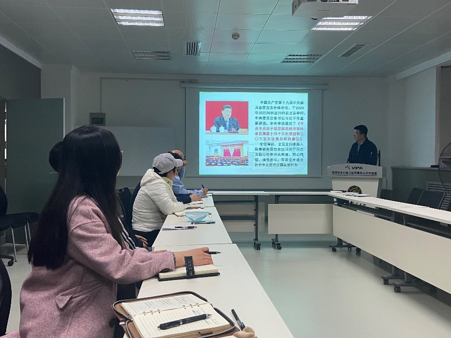
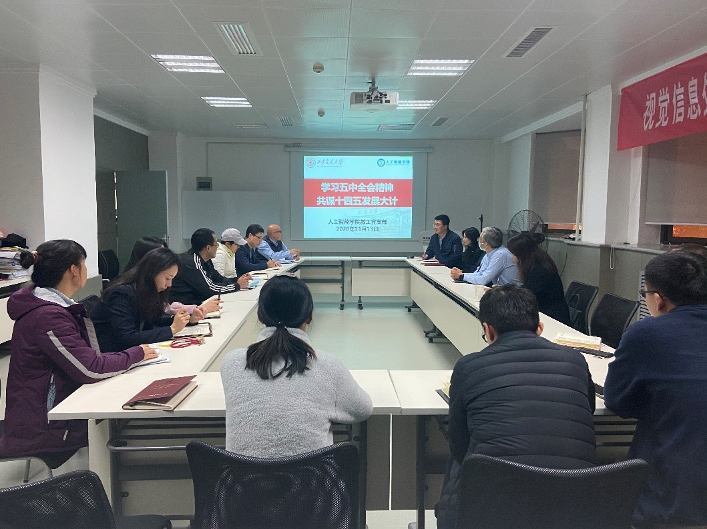
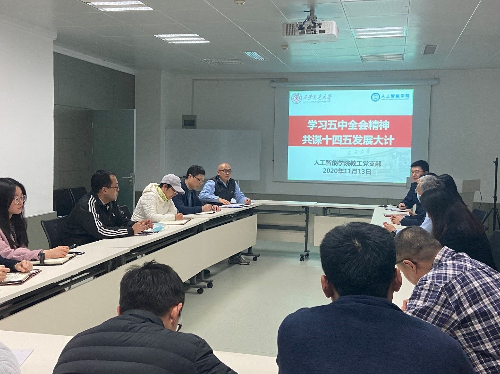
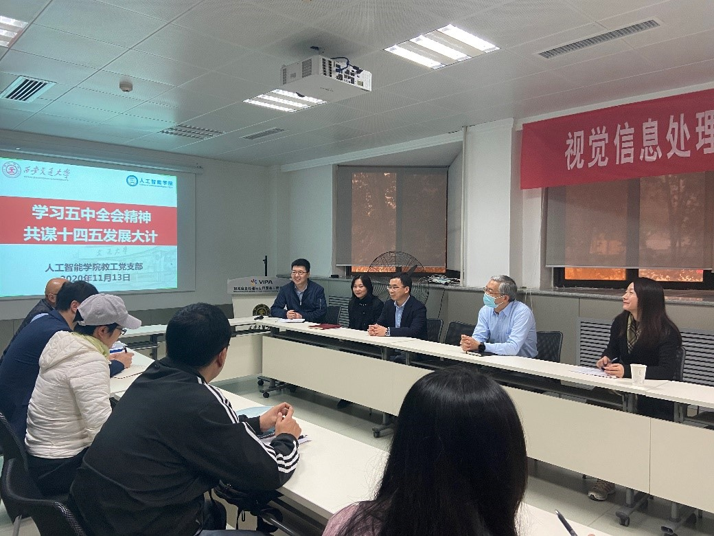

10月26日至29日，中国共产党第十九届中央委员会第五次全体会议在北京召开，习近平总书记作了重要讲话。会议对即将开始的“十四五”时期进行细致谋划和周密部署，提出了到二〇三五年基本实现社会主义现代化远景目标，审议通过了《中共中央关于制定国民经济和社会发展第十四个五年规划和二〇三五年远景目标的建议（讨论稿）》。
11月13日下午，人工智能学院教工党支部召开了以“学习五中全会精神，共谋十四五发展大计”为主题的学习讨论会议，支部党员共同学习和领会大会精神，并结合自身的实际体会进行了深入的交流。郑南宁教授、梁莉书记、人工智能学院党政领导、人工智能学院教工党员现场或线上参加了此次会议。人工智能学院党总支书记兰旭光教授主持会议。
学院教工党支部魏平书记首先带领全体参会人员学习了十九届五中全会公报的要点，包括决胜全面建成小康社会取得的10方面决定性成就、到二〇三五年要实现的9方面远景目标、“十四五”时期经济社会发展的6方面主要目标、实现奋斗目标的12方面具体举措等。魏平书记强调，在发布的五中全会公报全文中，“创新”在不同内容板块中被着重提及15次，无论是总结过往发展经验还是为“十四五”时期乃至更长远阶段谋篇布局，“创新”都是贯穿其中的鲜明主线。


学习了五中全会的会议精神后，教工支部支委刘龙军副教授、教工党员王一唯、张迎等参会人员纷纷发言表达感想。
郑南宁教授指出，在全体教职工的通力合作下，学院目前已经形成了一个较为完善的十四五规划方案。他勉励大家在此基础上，相互帮助、支持和学习，进一步深入思考学院的特点和特色，形成一个更具有特色且可实施的方案。
辛景民教授谈到，11月6日与郑南宁教授一同赴上海专程看望了西迁教师、人工智能领域著名学者宣国荣教授及夫人柴佩琪教授。80多岁的宣国荣老师依然在密切关注着最前沿的人工智能技术发展、践行着人机所的体育精神，他表示很感谢西迁后学校对他的培养。辛景民教授指出，西迁精神的基因需要传承，年轻人要倍加努力，不辜负老一辈的希望，争取在教学和科研等方面取得更好的成绩，实现我们的愿景和使命。
梁莉书记充分肯定了人工智能学院在十四五规划方面的工作成果，并指出学院在学科建设、人才培养、科学研究等方面，全面动员、全员参与，形成了很好的示范和引领效果。人工智能学院强调科技创新、注重全局谋划、加强顶层设计的方式，与十四五规划的要求完全贴合。梁莉书记强调，要将“五个坚持”重要原则更好的纳入到十四五规划中，进一步聚焦突破卡脖子问题。此外，要注重立德树人、以德育人，充分利用大团队的精神和凝聚力，把人才培养放在核心位置上，形成一个鲜活、有内涵的培养体系，使得年轻人在优秀的集体中做乐观主义的英雄。

